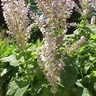

Correspondence Grimoire
Amenorrhoea
Type
Oils24

Clary Sage Essential OilAmenorrhoea is the absence or abnormal cessation of menstruation. Aromatherapy approaches this condition through emmenagogue oils, substances traditionally used to encourage and regulate the menstrual cycle.
⚠️ Emmenagogue oils stimulate menstrual flow and must never be used during pregnancy or by anyone who suspects they may be pregnant. Several oils on this list carry additional contraindications: avoid hyssop, sage, and tarragon with epilepsy or seizure disorders; use clary sage and sweet fennel with caution where hormone-sensitive conditions are present; use cinnamon leaf, hops, and myrrh in low dilution only.
Suggested Application of Oils
- Massage: Dilute the chosen oils in a carrier and apply with slow, warm, clockwise strokes across the lower abdomen and lower back.
- Bath: Add the chosen oils to a warm bath (diluted in milk, salt, or an unscented bath base) and soak.
Oils to Use to Address Amenorrhoea
 Basil Essential Oil
Basil Essential Oil Bay Laurel Essential Oil
Bay Laurel Essential Oil Carrot Seed Essential Oil
Carrot Seed Essential Oil Celery Seed Essential Oil
Celery Seed Essential Oil Cinnamon Leaf Essential Oil
Cinnamon Leaf Essential Oil Dill Seed Essential Oil
Dill Seed Essential Oil- Dill Weed Essential Oil
 Sweet Fennel Essential Oil
Sweet Fennel Essential Oil Hops Essential Oil
Hops Essential Oil Hyssop Essential Oil
Hyssop Essential Oil Juniper Berry Essential Oil
Juniper Berry Essential Oil Lovage Root Essential Oil
Lovage Root Essential Oil Marjoram Essential Oil
Marjoram Essential Oil Myrrh Oil
Myrrh Oil- Parsley Seed Essential Oil
 Cabbage Rose Absolute
Cabbage Rose Absolute- Rose Otto Oil
- Clary Sage Essential Oil
- Spanish Sage Essential Oil
 Tarragon Essential Oil
Tarragon Essential Oil Yarrow Essential Oil
Yarrow Essential Oil